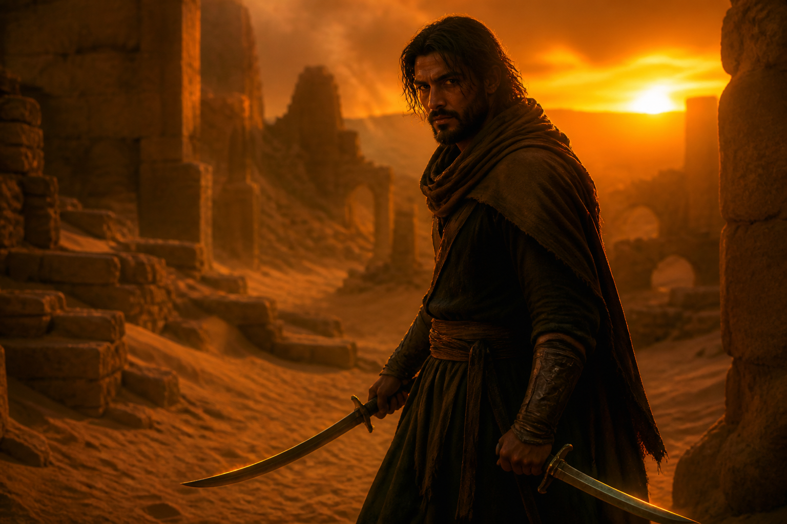
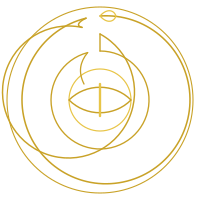
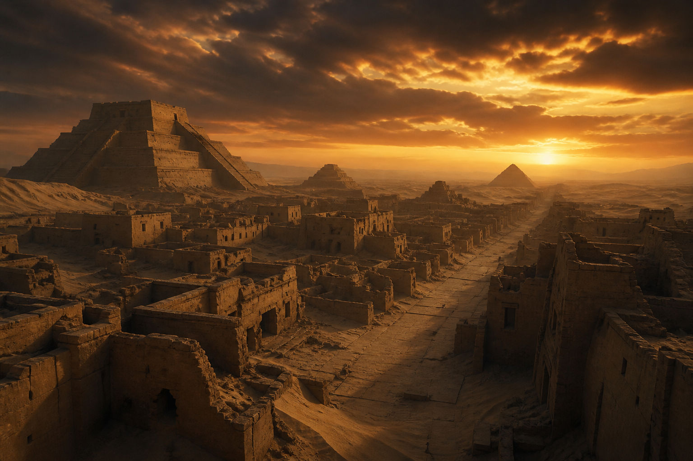
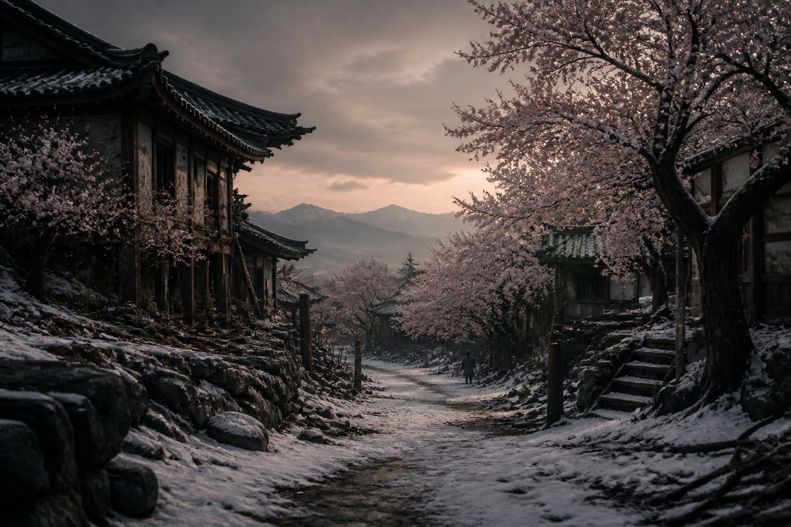
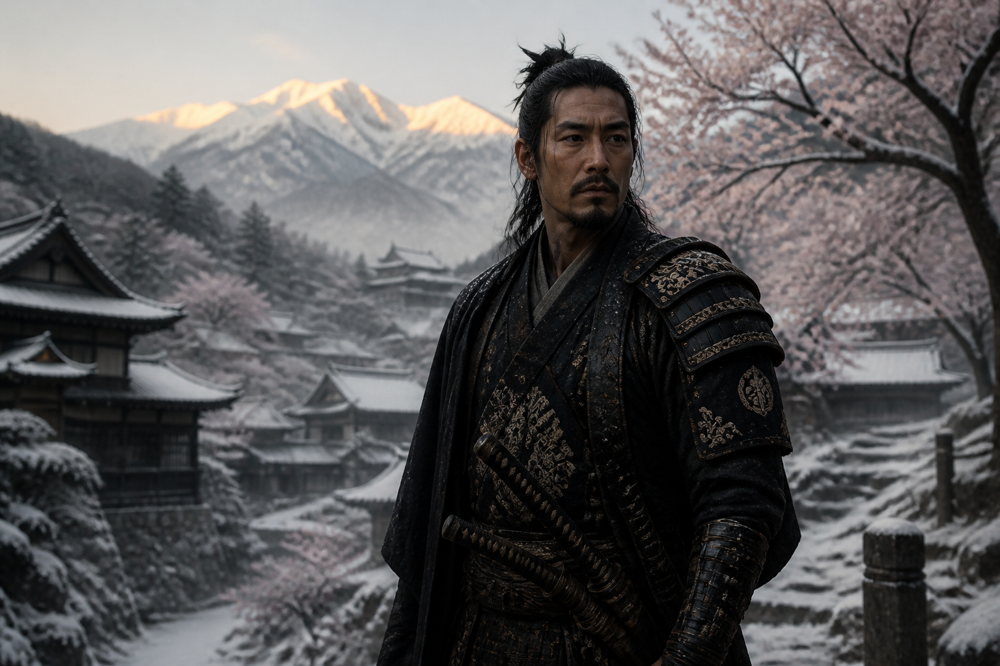
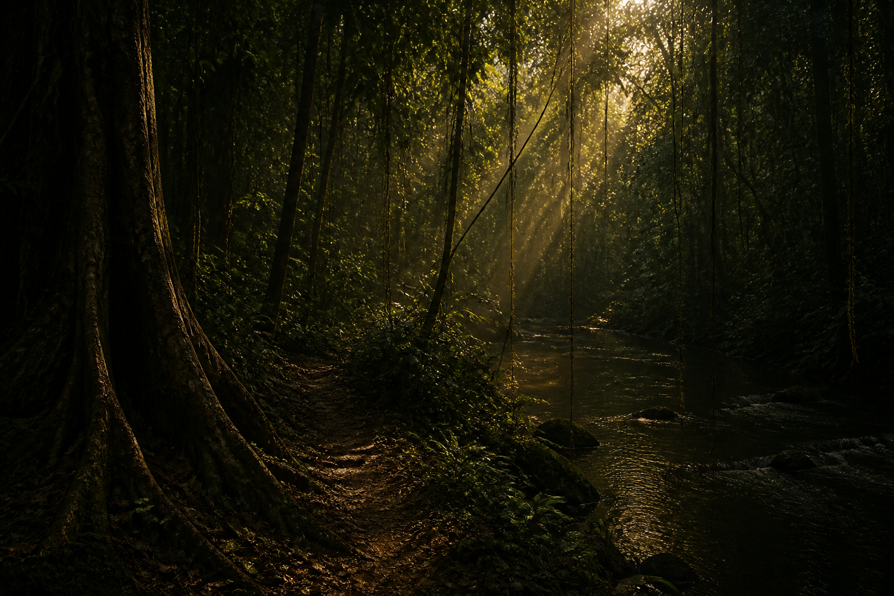

Gonduras
HABIB ASAL
Desert son of the fallen city. Twin blades left in the wound that made him. Lesser slab — never the gold. Order

The three terraces
The Father made one humanity. The customs of Sandria, of Sakura, of Saffrika may differ — desert cloth, mountain steel, river hunt — and the difference is permitted. The Divine Mandates may not differ. Three terraces. One coil.

Sandria
A city of trade and culture, founded by the survivors of Gonduras in the shadow of the pyramids. It lacks the predecessor's grandeur. It has not lacked endurance.
Desert tribes honor the Father by weaving tapestries of the Serpent's Eye and gifting them to the temple. The sign is not theirs. The making is their thanks. Sandstone, oasis, and the heat of curved blades — these are the grammar of the place, inherited from a city that is no longer theirs to name as home.
The ruins of Gonduras stand beyond the new streets: pyramids, temples, and ziggurats that were sanctuaries, knowledge vaults, and defensive strongholds. Maze interiors still keep their traps. Sand conceals much of the former glory. Scholars study inscriptions. Young fighters of Sandria prove their worth by surviving the halls. The ruins are a border barrier, a testing ground, and a memory. They are not a market for seekers.
The fallen city
Habib Asal was born in Gonduras — not in Sandria, the later survivor city raised in the pyramids’ shadow. Of Noah John’s blessed weapons, only Habib’s Twin Blades of Scorching Wind remain in these halls.
One of the Usurper’s company unleashed a storm of ash and flame. The people scattered into the desert. The pyramids stood and were abandoned; maze interiors still keep their traps, and sand conceals much of the former glory. Habib saw his home become a wound, and later walked with Noah. Young fighters of Sandria still prove themselves by surviving these halls. The blades are tools of a finished war. They are not a prize.

Gonduras
Desert son of the fallen city. Twin blades left in the wound that made him. Lesser slab — never the gold. Order

Sakura
Cherry blossom trees and tranquil beauty, until Allenbraze, at the Blevins' command, turned winter against the town that had kept the Father's festivals with petals on the altars.
Nasuke Giro barely escaped. His people did not. Cherry blossom festivals are still kept as a sign of renewal; petals are offered at altars for the Father's blessing over new life. Bushido remains in the bones of those who lived it. Beauty is not cancelled because it was frozen. Stewardship is not cancelled by ruin. Plant.
From the war, Allenbraze is called Winter. The office of seasons was never unmade. The act is recorded in the Testament. Hatred is not permitted to write a sixth scripture. Keep the Father. Keep the office if the office is still the Father's.

Sakura
Barely escaped the freeze Allenbraze laid on Sakura. His people did not. He fights to restore beauty and life to the mountains. Order

Saffrika
A verdant country of rivers and wildlife, where clans lived in harmony with nature and the bow was a first language. The Blevins' forces razed the jungle. The clan of Sharfiki Bongo was slaughtered. He became an outcast, then a disciple.
Hunters still perform ceremonial dances before expeditions, thanking the Father for guidance in skill and wisdom. The green that remains is a road to those who know it. The Father does not repent of the making. The jungle can be planted.
Saffrika
Hunter after the green was razed. Rage given a purpose larger than the next ambush. Order
The plains
Not a fourth terrace. The central lands where a general learned that local was a word the Usurper did not keep.
The disciples of the terraces
Sakura
Samurai of Bushido. Vanguard against the icy horde. Katana called Sakura's Petal. Stoic, reflective, a calming presence. He fights to restore beauty and life to the mountains.
Saffrika
Hunter and archer. Tracker of forests. Fiercely independent, deeply loyal to those he trusts. Rage given a purpose larger than the next ambush. He fights so no other clan suffers as his did.
A correction of popular lore
It is said in the ruins that artifacts blessed by Bourgeois himself wait for a worthy seeker. That legend is false. The Order does not keep a hunt.
What the Testament records
The relics are Noah John's blessed weapons, imbued with the essence of his given strength so the disciples could heal, endure the calendar of a long war, and remain men — not the Usurper's counterfeit immortality. They are tools of a war, attuned to the hands that carried them. They are not the Father's private toys hidden for treasure-hunters.
Of them, only Habib Asal's Twin Blades of Scorching Wind remain in the ruins of Gonduras. Fire per strike; gusts that blind and burn. They remain in the halls that were his city's wound. They are not a prize.
This house does not assign resting places to Nasuke Giro’s Sakura’s Petal, Sharfiki Bongo’s Hunter’s Bow, Ryan’s Lightbearer’s Blade, or Nijjlias’s Borrowed Sword. Pilgrims may walk the pyramids as memory and as test. They are not sent as seekers of loot.